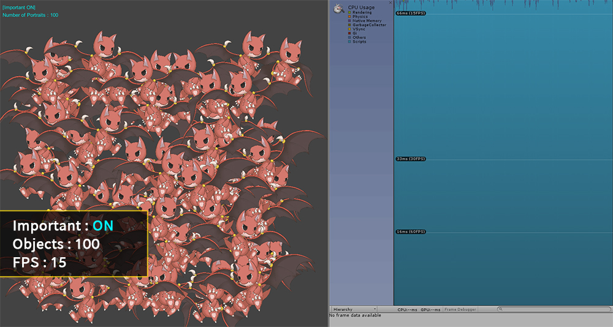
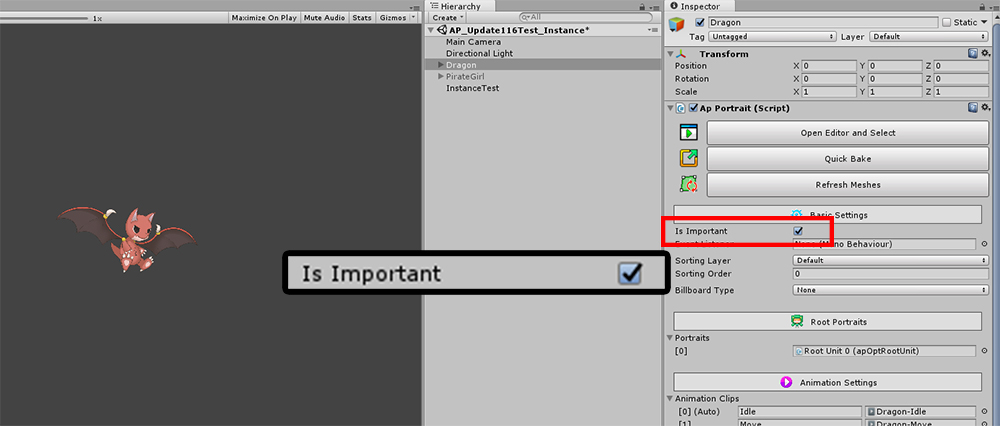

AnyPortrait > 메뉴얼 > Important 옵션과 다수의 객체
Important 옵션과 다수의 객체
1.2.3
게임을 만들다보면 한 화면에 수많은 캐릭터들이 등장하는 경우가 있습니다.
1명의 플레이어와 다수의 몬스터들이 등장하는 경우가 주로 볼 수 있는 예시일 것입니다.
하지만 많은 캐릭터들이 등장한다면 게임은 매우 느려져서 게임을 플레이할 수 없을 것입니다.
AnyPortrait의 "Important 옵션"을 변경하면 성능을 향상시킬 수 있습니다.
- Important 옵션이 켜진 상태 : 매 프레임마다 업데이트가 되어 애니메이션이 부드럽습니다. (기본값)
- Important 옵션이 꺼진 상태 : 업데이트 프레임이 제한되어 애니메이션의 품질은 조금 떨어지지만 성능이 향상됩니다.
일반적으로 플레이어 캐릭터처럼 중요한 객체는 Important 옵션을 켜는 것을 권장하며,
다수로 등장하되 애니메이션의 품질이 낮아도 되는 몬스터들이나 배경의 오브젝트들은 Important 옵션을 끄는 것을 권장합니다.
아래의 프로파일링 결과에서 Important 옵션의 값에 따라서 성능의 차이를 볼 수 있습니다.
(아래의 실험 결과는 캐릭터의 복잡도, 실행 환경, 씬의 구성에 따라서 다르게 측정될 수 있습니다.)

애니메이션이 재생되는 캐릭터를 50개 배치시킨 화면입니다.
캐릭터의 Important 설정은 켜져 있으며, FPS (Frames Per Second)는 30 정도를 기록했습니다.

20개의 캐릭터를 더 생성하여 총 70개의 캐릭터들이 배치되었습니다.
캐릭터가 추가된 만큼 FPS가 감소하여 약 22의 FPS를 기록했습니다.

100개의 캐릭터들이 배치되니 FPS가 15까지 감소되었습니다.
이렇게 성능이 저하된 경우에는 정상적인 게임 플레이를 기대할 수 없을 것입니다.

이제 Important 옵션을 끄고 캐릭터를 배치해보았습니다.
캐릭터의 Important 옵션에서의 "제한되는 FPS 설정"은 30입니다.
캐릭터가 50개 배치되었을 때 Important 옵션이 켜진 경우와 동일하게 FPS는 30을 기록했습니다.
이 상태에서는 애니메이션이 매 프레임마다 갱신되는 것이 아니기 때문에 프로파일러에서의 FPS가 다소 특이하게 기록되는 것을 볼 수 있습니다.

캐릭터를 70개 배치한 결과입니다.
FPS는 30 또는 그보다 약간 더 이상을 기록하여 Important 옵션이 켜진 경우보다 높은 성능을 보여줍니다.
AnyPortrait는 Important 옵션이 꺼진 동일한 캐릭터들의 업데이트를 일괄적으로 관리하는 작업을 수행합니다.
그리고 이 과정에서 가능한 서로 다른 프레임에서 캐릭터들의 업데이트를 처리하고자 합니다.
다만, 다른 요인에 의해서 FPS가 변동된 경우 AnyPortrait는 캐릭터들의 업데이트 시점을 조정하기 때문에 일시적인 프레임 저하 현상(Spike)이 발생할 수 있습니다.
(유니티는 주기적으로 메모리 관리 등의 이유로 FPS가 변동됩니다.)

100개의 캐릭터를 배치한 결과입니다.
FPS는 조금 줄어들었지만 Important 옵션이 켜진 경우보다 양호한 27 정도를 기록하였습니다.
최대한 모든 프레임에 고르게 캐릭터들의 업데이트를 분산시킨 것을 프로파일러를 통해서 확인할 수 있습니다.

Important 옵션을 변경하는 방법은 여러가지가 있습니다.
먼저 Bake 다이얼로그에서 옵션을 변경해봅시다.
(1) Bake 버튼을 누릅니다.
(2) Setting 탭을 선택합니다.
(3) "Is Important" 항목을 클릭하여 설정을 변경할 수 있습니다.
"FPS" 항목은 Important 옵션이 꺼진 경우의 업데이트 빈도입니다.
(일반적으로 15, 20, 30의 값을 권장합니다.)

Inspector UI에서 "Is Important" 항목을 클릭하여 설정을 변경할 수도 있습니다.스크립트로도 Important 옵션을 변경하는 것도 가능합니다.
관련 페이지에서 "SetImportant(bool)" 함수를 확인해보시길 바랍니다.
스크립트를 이용하는 경우, 실시간으로 옵션을 변경할 수 있으므로 게임의 최적화에 도움이 될 것입니다.
참고
v1.2.3에서 Important 옵션이 비활성된 상태에서 캐릭터가 고정 FPS로 실행될 때의 처리가 개선되었습니다.
이제 간헐적인 프레임 저하 현상(Spike)이 가능한 발생되지 않도록 개선되었습니다.
이 버전부터는 고정 FPS는 게임의 FPS의 절반 또는 그 이하로만 동작하도록 제한됩니다.
만약 게임의 FPS가 저하되거나 너무 높은 고정 FPS값이 지정되었다면, 무조건 게임의 FPS의 절반 또는 그 이하로 실행되도록 강제됩니다.